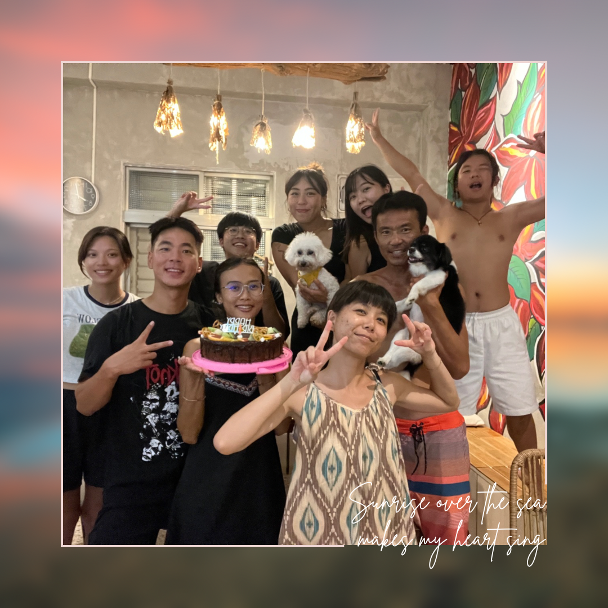
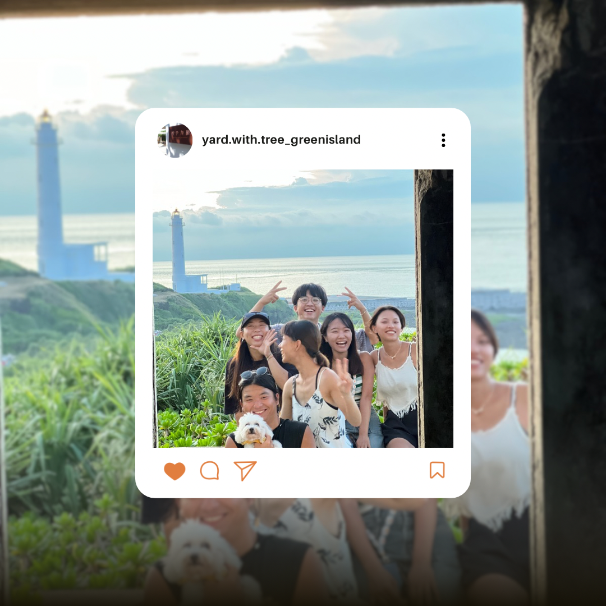
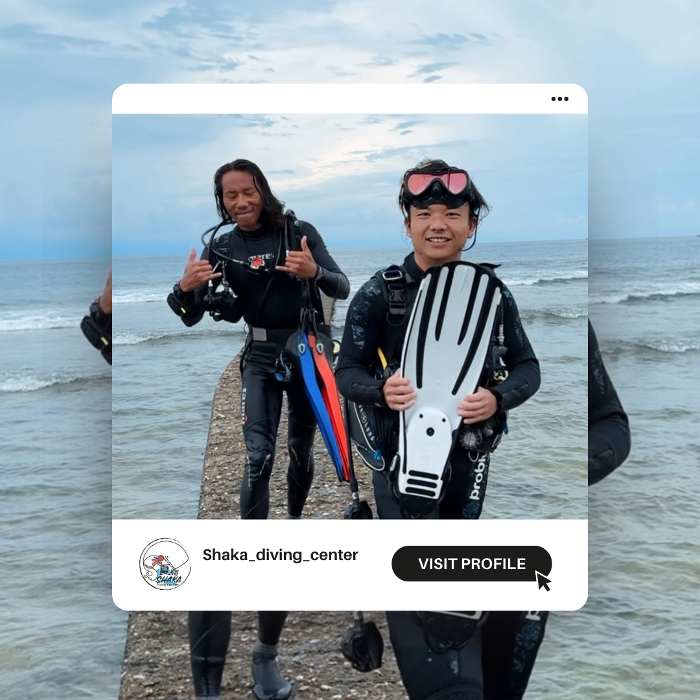
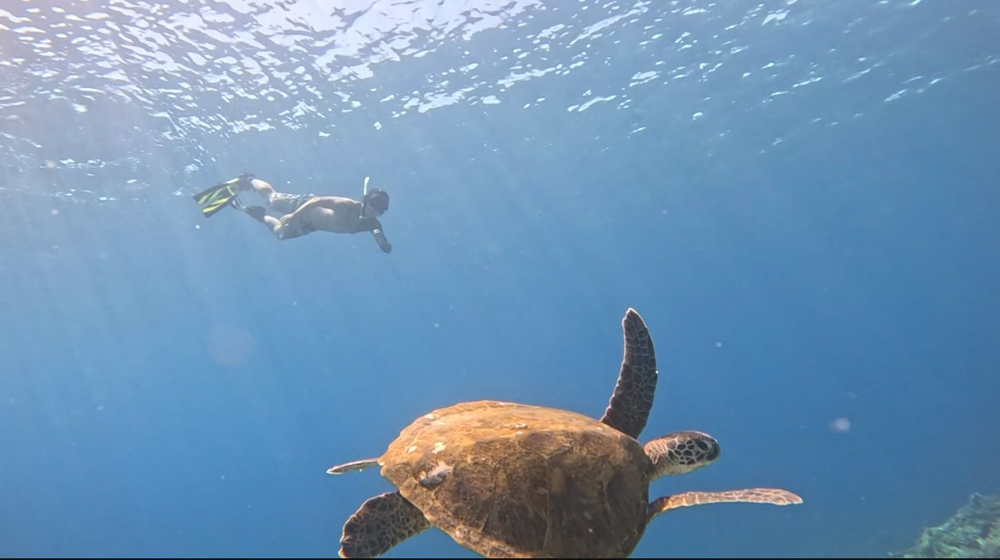
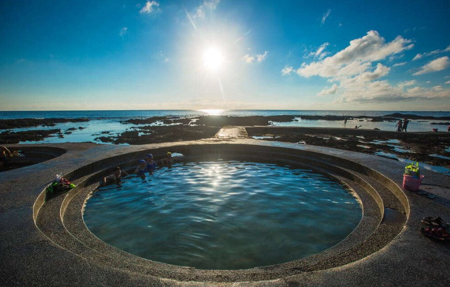

|  |
一直曬太陽民宿 在今年暑假的時候，做了一件很想做的事，在以前看到朋友去離島打工換宿，體驗不一樣的生活，現在換我到綠島，體驗到小島生活。 我所待在的地方是位於公館村的「一直曬太陽」民宿，老闆們人都相當的好 老闆是在地的綠島人，跟著他學到了很多綠島上的小知識。 |
|
院子有樹
除了認識自己民宿的人，還順帶認識了老闆們在綠島上的咖啡廳老闆娘。 |
 |
|  |
夏咖潛水中心
來到綠島了，不免俗還是要進入海底一探究竟。 |
| 潛水 | 泡溫泉 | 看星星 |
|  |  |